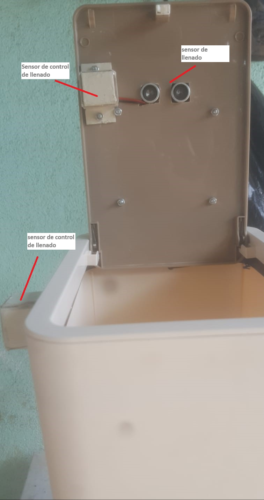
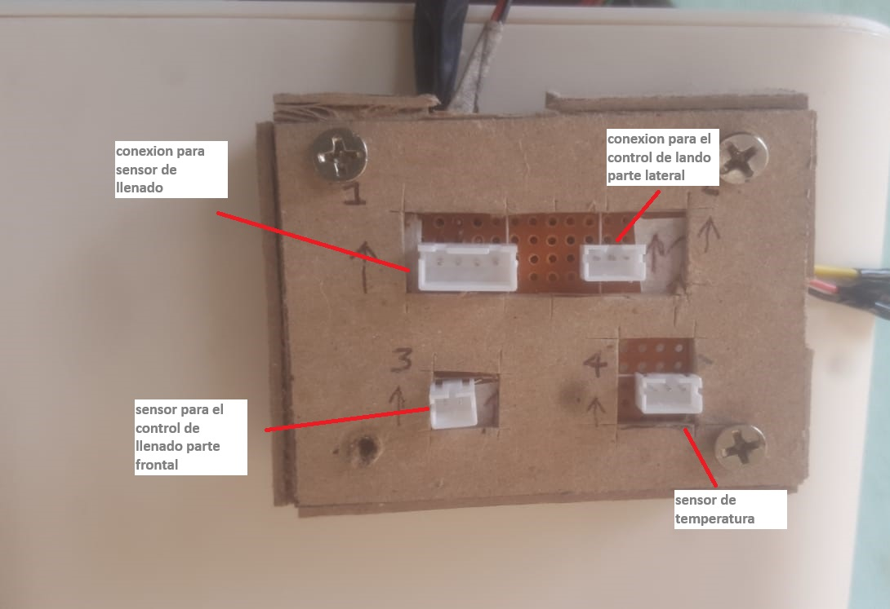
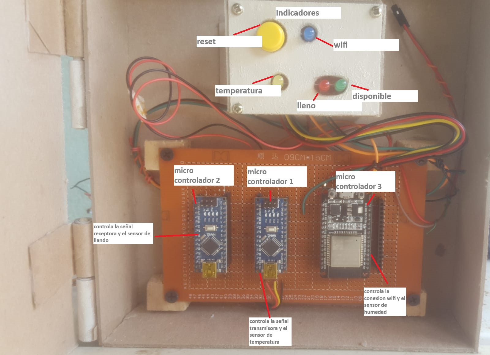

Sensores. .
El conetnedor posee 4 sensores que Acontinuacion se le explicada cada uno de ellos.

×
Este es un mensaje de información.
Contenedor Principal.
Compostador automatico

Sistema De conexiones.
La placa tracera del contendor posee 4 conexiones , conexiones para el sensor de llenado , temperatura, sensor transmisor y sensor receptor.

Sistema De control.
El sistema de control posee 3 micro controladores el cual dos de ellos trabajan de manera paralela y un ultimo micro controlador que trabaja individual,.
